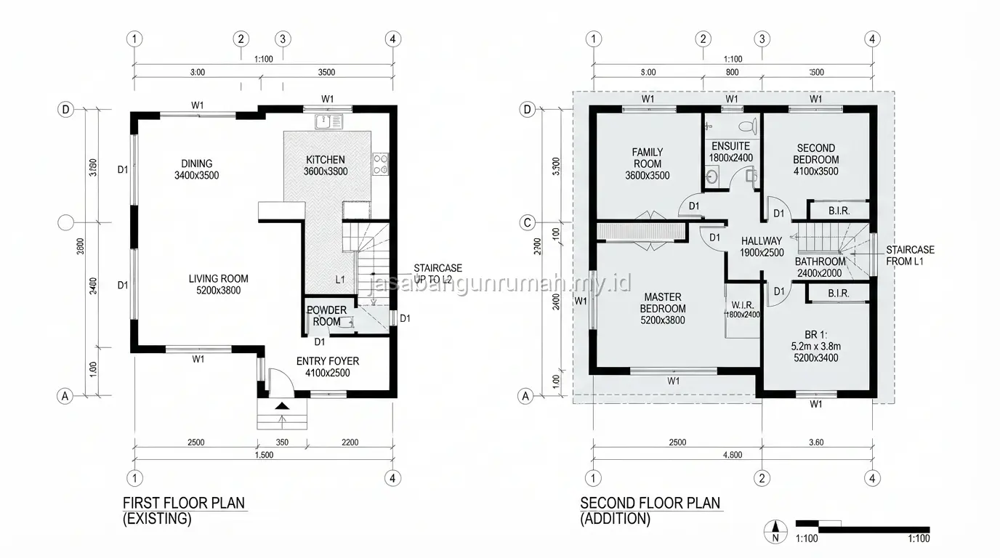

Daftar Isi
Layout rumah tumbuh dirancang dengan mempertimbangkan area perluasan sejak tahap awal, termasuk perencanaan pondasi cadangan dan tata ruang yang tetap fungsional meski dibangun secara bertahap sesuai anggaran yang tersedia.
Apa Itu Konsep Rumah Tumbuh dan Mengapa Dipilih Banyak Orang?
Rumah tumbuh adalah konsep pembangunan bertahap di mana rumah dibangun dalam skala minimal terlebih dahulu, kemudian diperluas secara bertahap seiring bertambahnya kebutuhan ruang dan ketersediaan anggaran di masa depan.
Konsep ini banyak dipilih oleh pasangan muda atau keluarga baru yang memiliki anggaran terbatas di awal, namun sudah memperkirakan kebutuhan ruang akan bertambah seiring bertambahnya anggota keluarga.
Dengan perencanaan yang matang sejak awal, rumah tumbuh tetap dapat memiliki tampilan rapi pada setiap tahap pembangunan, tidak terlihat seperti bangunan yang belum selesai. Beberapa alasan utama orang memilih konsep ini antara lain:
- Anggaran awal lebih terjangkau karena dibangun secara bertahap
- Fleksibel menyesuaikan kebutuhan ruang yang berkembang
- Menghindari utang besar di awal dengan tetap memiliki hunian layak
- Dapat disesuaikan dengan pertumbuhan keluarga secara bertahap
Bagaimana Merencanakan Pondasi untuk Perluasan di Masa Depan?
Pondasi untuk rumah tumbuh sebaiknya dirancang sejak awal dengan memperhitungkan beban tambahan dari rencana perluasan, misalnya penambahan lantai dua, sehingga pondasi tahap pertama sudah cukup kuat menahan beban tambahan tersebut tanpa perlu dibongkar ulang.
Perhitungan struktur untuk pondasi yang mengantisipasi perluasan sebaiknya dilakukan oleh insinyur sipil sejak tahap desain, karena kesalahan estimasi beban dapat menyebabkan pondasi tidak mampu menahan struktur tambahan di kemudian hari.
Menyiapkan pondasi dengan kapasitas lebih besar di awal memang menambah biaya pada tahap pertama, namun jauh lebih hemat dibandingkan harus membongkar dan mengganti pondasi saat perluasan dilakukan. Hal-hal yang perlu diperhatikan dalam perencanaan pondasi rumah tumbuh:
- Hitung beban total termasuk rencana lantai tambahan sejak awal
- Gunakan jenis pondasi yang sesuai dengan kondisi tanah dan rencana perluasan
- Siapkan kolom cadangan pada titik yang direncanakan untuk perluasan
- Libatkan insinyur sipil dalam perhitungan struktur sejak tahap desain
Bagaimana Mendesain Layout agar Perluasan Tetap Rapi?
Layout rumah tumbuh sebaiknya menempatkan ruang-ruang utama seperti kamar tidur dan kamar mandi pada posisi yang tidak akan terganggu oleh rencana perluasan, sementara area yang direncanakan untuk diperluas ditempatkan pada sisi yang lebih fleksibel seperti bagian belakang atau area lantai atas.

Penempatan tangga sejak tahap awal juga perlu dipertimbangkan apabila rencana perluasan mencakup penambahan lantai, meskipun lantai dua belum dibangun pada tahap pertama.
Perencanaan posisi tangga sejak awal akan menghindari pembongkaran struktur lantai satu saat proses penambahan lantai dilakukan di kemudian hari. Prinsip dasar layout rumah tumbuh yang baik meliputi:
- Ruang utama (kamar tidur, kamar mandi) ditempatkan di zona permanen
- Area servis (dapur, gudang) ditempatkan di zona yang mudah diperluas
- Posisi tangga sudah ditentukan sejak tahap pertama meski belum dibangun
- Fasad depan dirancang tetap rapi meski bangunan belum sepenuhnya selesai
Apa Saja yang Perlu Disiapkan Sejak Tahap Awal Pembangunan?
Selain pondasi dan layout, hal lain yang perlu disiapkan sejak awal adalah jalur instalasi listrik dan pipa air yang mengantisipasi kebutuhan tambahan di masa depan, seperti titik sambungan yang sudah disiapkan namun belum diaktifkan sepenuhnya.
Dokumen legalitas bangunan juga sebaiknya turut mempertimbangkan rencana perluasan sejak awal, agar proses pengajuan dokumen tambahan saat perluasan dilakukan tidak memerlukan revisi besar dari perencanaan awal.
Bagi calon pembangun yang ingin merencanakan rumah tumbuh secara matang sejak awal, dapat berkonsultasi langsung dengan layanan arsitek rumah profesional kami agar perencanaan pondasi dan tata ruang disesuaikan dengan rencana perluasan di masa depan.